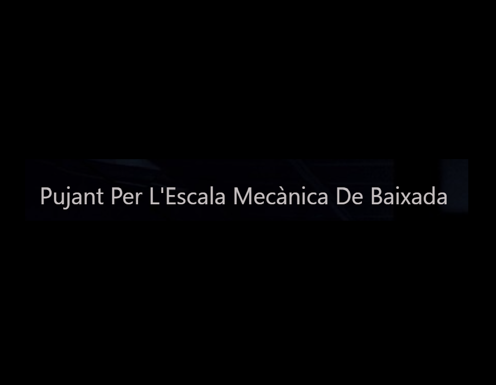
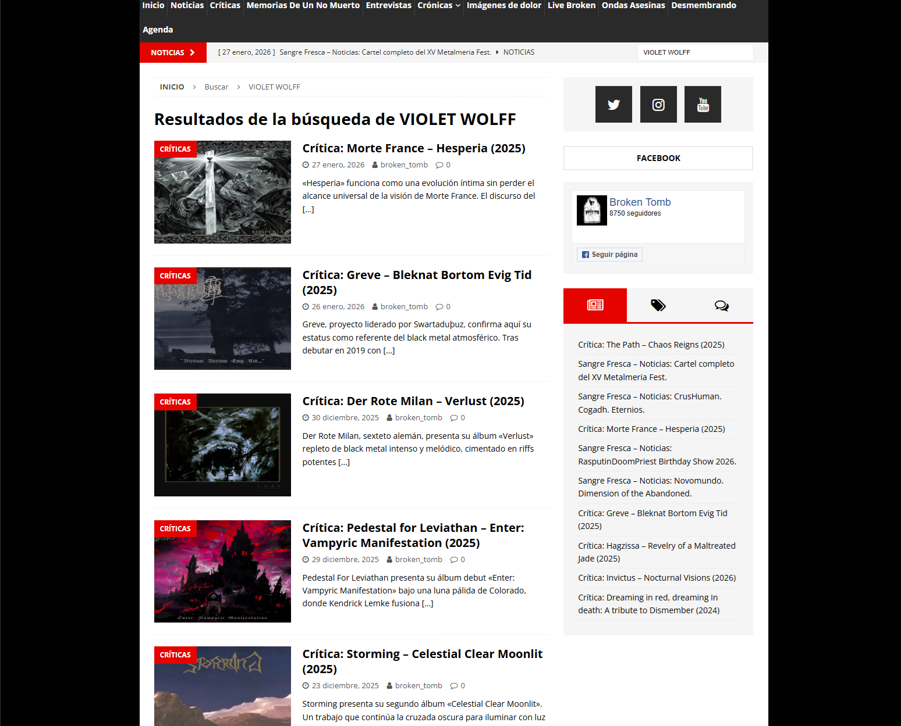

-
Textil
Funciones:
Responsable de Implementar y personalizar módulos de Prestashop (carrito, filtros, búsqueda, paginación). Desarrollo de temas responsive con HTML5, CSS3 y JavaScript, asegurando compatibilidad entre navegadores. Integrar módulos de SEO y para mejorar el posicionamiento. Crear y mantener plantillas de correo, páginas landing y páginas de producto con Smarty y PHP. Automatización de carga de contenido mediante Excel y scripts PHP para actualización de catálogos. sincronización de inventario y precios entre Prestashop y ERP. Uso de la IA para generar textos e imágenes para banners y promociones. Uso de Figma para diseño UI/UX y exportación a HTML/CSS/JS integrada al temas Prestashop. Marketing Digital y SEO. Estrategias de posicionamiento con palabras clave objetivo, optimización on-page (títulos, meta descripciones, encabezados). Configuración y gestión de Google Ads. Generación de contenido optimizado con IA para blog y fichas de producto. Auditoría de SEO técnico y mejoras de velocidad de carga.
SEO, Frontend Web Developer, Gestor de contenido.
Empresa: Textil
-
AENTEG
Funciones:
Responsable del diseño, desarrollo y redacción de contenido para múltiples sitios web, asegurando una experiencia de usuario óptima. Implementación de tecnologías como WordPress, CSS3 y PHP para crear sitios web funcionales y atractivos. Garantía de accesibilidad y usabilidad. Control y personalización de tipografías, plantillas. Optimización del diseño para diferentes dispositivos y navegadores, garantizando compatibilidad y rendimiento consistente. Uso y gestión de plugins de WordPress para ampliar funcionalidades (SEO, seguridad, rendimiento, formularios, caché, copias de seguridad, accesibilidad, analytics, etc.). Evaluación de plugins adecuados, instalación, configuración y mantenimiento para garantizar compatibilidad y estabilidad. Integración de plugins con el tema y el código personalizado para lograr una experiencia de usuario cohesiva. Implementación de prácticas de seguridad y rendimiento al trabajar con plugins (actualizaciones regulares, pruebas en entornos staging, configuración de caché y lazy loading).
https://www.premisetech.com/Frontend Web Developer, Gestor de contenido.
Empresa: AENTEG.
-
Music Go Bang
Funciones:
Responsable del diseño, desarrollo código cero y mantenimiento del sitio web, enfocado en la accesibilidad y UX. Uso de las tecnologías HTML5, CSS3, JavaScript, Bootstrap, Ajax y GitHub para el diseño y control de tipografías, plantillas y elementos visuales, implementación de interactividad mediante JavaScript. Colaboración con GitHub. Uso de herramientas de IA para automatizar pruebas de accesibilidad, generar contenido alternativo y optimizar experiencias de usuario mediante análisis de datos de interacción (A/B testing, métricas de UX).
Link MusicGoBangFrontend Web Developer, Gestor de contenido.
-

Pujant Per L'Escala Mecànica De Baixada
Funciones:
Responsable del diseño, desarrollo código cero y mantenimiento del sitio web, enfocado en la accesibilidad y UX. Uso de las tecnologías HTML5, CSS3, JavaScript, Bootstrap, Ajax y GitHub para el diseño y control de tipografías, plantillas y elementos visuales, implementación de interactividad mediante JavaScript. Colaboración con GitHub. Uso de herramientas de IA para automatizar pruebas de accesibilidad, generar contenido alternativo y optimizar experiencias de usuario mediante análisis de datos de interacción (A/B testing, métricas de UX).
Link PujantPerL'Escala MecànicaDeBaixadaFrontend Web Developer, Gestor de contenido.
Empresa: Radio Salt.
-

BROKEN TOMB
Funciones:
Redactora y crítica musical especializada en rock, con capacidad para captar la energía musical y traducirla en reseñas claras, dinámicas y fieles a la experiencia del oyente
https://www.brokentombmagazine.com/REDACTORA.
Empresa: BROCKEN TOMB.
-
Responsable del diseño, desarrollo código cero y mantenimiento de diversos sitios web, enfocado en la accesibilidad y UX. Uso de las tecnologías HTML5, CSS3, JavaScript, Bootstrap, Ajax, React y GitHub para el diseño y control de tipografías, plantillas y elementos visuales, implementación de interactividad mediante JavaScript y React; gestión de versiones y colaboración con GitHub. Uso de herramientas de IA para automatizar pruebas de accesibilidad, generar contenido alternativo y optimizar experiencias de usuario mediante análisis de datos de interacción (A/B testing, métricas de UX).
LinkCURRÍCULUM